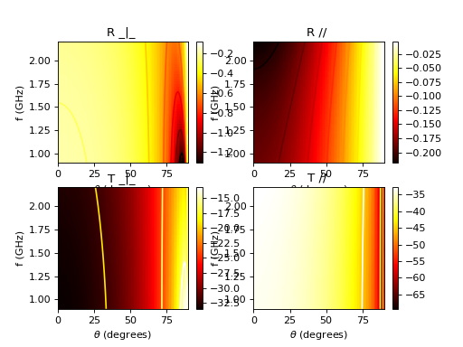

SlabDB¶
-
class
pylayers.antprop.slab.SlabDB(fileslab='', filemat='', ds={}, dm={'_AIR': {'sigma': 0.0, 'roughness': 0.0, 'epr': (1+0j), 'mur': (1+0j)}, 'METAL': {'sigma': 10000000, 'roughness': 0.0, 'epr': (1+0j), 'mur': (1+0j)}, 'AIR': {'sigma': 0.0, 'roughness': 0.0, 'epr': (1+0j), 'mur': (1+0j)}})¶ Bases:
dictSlab data base
Attributes
DB (slab dictionnary) Methods
add(name, lmatname, lthick[, color])add a slab from its properties addgui(name)add a slab in the DB clear(() -> None. Remove all items from D.)copy(() -> a shallow copy of D)delete(name)delete an element from the database edit(name)edit a Slab in the DB fromkeys(...)v defaults to None. get((k[,d]) -> D[k] if k in D, ...)has_key((k) -> True if D has a key k, else False)items(() -> list of D’s (key, value) pairs, ...)iteritems(() -> an iterator over the (key, ...)iterkeys(() -> an iterator over the keys of D)itervalues(...)keys(() -> list of D’s keys)load([_fileini])Load a Material from a .ini file pop((k[,d]) -> v, ...)If key is not found, d is returned if given, otherwise KeyError is raised popitem(() -> (k, v), ...)2-tuple; but raise KeyError if D is empty. save([_fileini])save SlabDB in a .ini file setdefault((k[,d]) -> D.get(k,d), ...)show([name, fGHz])evaluate and show a given slab showall()show all slabs update(([E, ...)If E present and has a .keys() method, does: for k in E: D[k] = E[k] values(() -> list of D’s values)viewitems(...)viewkeys(...)viewvalues(...)Methods Summary
add(name, lmatname, lthick[, color])add a slab from its properties addgui(name)add a slab in the DB delete(name)delete an element from the database edit(name)edit a Slab in the DB load([_fileini])Load a Material from a .ini file save([_fileini])save SlabDB in a .ini file show([name, fGHz])evaluate and show a given slab showall()show all slabs Methods Documentation
-
add(name, lmatname, lthick, color='black')¶ add a slab from its properties
Parameters: name : string
lmatname : list of mat name
lthick : list ot float
list of layer thickness in meters
Examples
Examples from the paper:
“Reflection and Transmission Properties of Building Materials in D-Band for Modeling Future mm-Wave Communication Systems ” Martin Jacob and Thomas Kurner and Robert Geise and Radoslaw Piesiewicz EUCAP 2010
>>> from pylayers.antprop.slab import * >>> import numpy as np >>> import matplotlib.pylab as plt >>> sl = SlabDB(filemat='matDB.ini',fileslab='slabDB.ini') >>> sl.mat.add(name='ConcreteJc',cval=3.5,alpha_cmm1=1.9,fGHz=120,typ='THz') >>> sl.mat.add(name='GlassJc',cval=2.55,alpha_cmm1=2.4,fGHz=120,typ='THz') >>> sl.add('ConcreteJc',['ConcreteJc'],[0.049]) >>> sl.add('DoubleGlass',['GlassJc','AIR','GlassJc'],[0.0029,0.0102,0.0029]) >>> theta = np.linspace(20,60,100)*np.pi/180 >>> sl['ConcreteJc'].eval(120,theta) >>> f,a=sl['ConcreteJc'].plotwrt(var='a',typ=['l20']) >>> fig = plt.figure() >>> sl['DoubleGlass'].eval(120,theta) >>> f,a = sl['DoubleGlass'].plotwrt(var='a',typ=['l20']) >>> freq = np.linspace(110,135,50) >>> fig = plt.figure() >>> sl['DoubleGlass'].eval(freq,theta) >>> sl['DoubleGlass'].pcolor(dB=True)Exemple from paper “[Kiani2007] Glass Characterization for Designing Frequency Selective Surfaces to Improve Transmission through Energy saving glass windows Kiani 2007” The surface impedance is \(R = 4 \Omega\), the thicknesss is \(d = 100 nm\)
Pilkington Spectrum OnLine applet
Design of Energy Saving Windows with high Transmission at 900MHz and 1800 MHz
\[\sigma = \frac{1}{Rd} = 2.5 10^{6} S/m\]>>> from pylayers.antprop.slab import * >>> import numpy as np >>> import matplotlib.pylab as plt >>> sl = SlabDB(filemat='matDB.ini',fileslab='slabDB.ini') >>> sl.mat.add(name='CoatingPilkington',cval=1,sigma=2.5e6,typ='epsr') >>> sl.mat.add(name='GlassPilkington',cval = 6.9,sigma = 5e-4,typ='epsr') >>> sl.add('Optitherm382',['CoatingPilkington','GlassPilkington'],[100e-9,0.00382]) >>> fGHz = np.linspace(0.9,2.2,50) >>> theta = np.linspace(0,np.pi/2,100) >>> sl['Optitherm382'].eval(fGHz,theta) >>> sl['Optitherm382'].pcolor(dB=True)(Source code, png, hires.png, pdf)

-
addgui(name)¶ add a slab in the DB
Parameters: name
-
delete(name)¶ delete an element from the database
Parameters: name : string
-
edit(name)¶ edit a Slab in the DB
Parameters: name : string
-
load(_fileini='slabDB.ini')¶ Load a Material from a .ini file
Parameters: _fileini : string
-
save(_fileini='slabDB.ini')¶ save SlabDB in a .ini file
Parameters: _fileini : string
-
show(name='WOOD', fGHz=array([ 2.4]))¶ evaluate and show a given slab
Parameters: name : string
fGHz : np.array
-
showall()¶ show all slabs
-

{kind=link}
{kind=link}
{kind=link}
{kind=link}
{kind=link}
{kind=link}
{kind=link}
{kind=link}
{kind=link}
{kind=link}